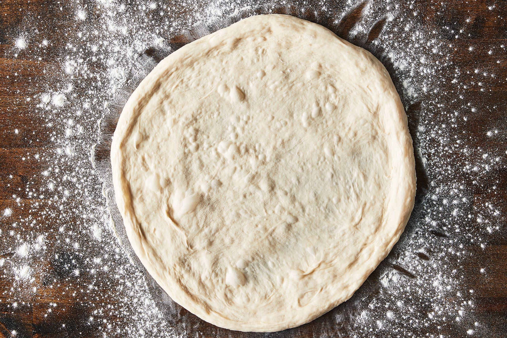

Pizza Dough Recipe
A wholesome pizza dough recipe. Thin and crispy, with a chewy inside.
Can be used in many styles of pizza. Made with Bread Flour AP mix
Ingredients
- 360g AP Flour
- 408g AP Flour
- 3 tsp yeast
- 2.5 cups warm water (113F)
- 2 tsp kosher salt
- 1/4 cup olive oil
- 1/4 cup sugar
Directions:
-
In one bowl, combine warm water and yeast. In another, all dry ingredients.
-
When yeast is foamy, mix with dry ingredients. Add Oil to mixture.
Knead and combine dough for 5 minutes or until soft.
- Shape into ball. Rest for 1-2 hours.
-
Freeze or use with toppings and sauce of your choice!
Home